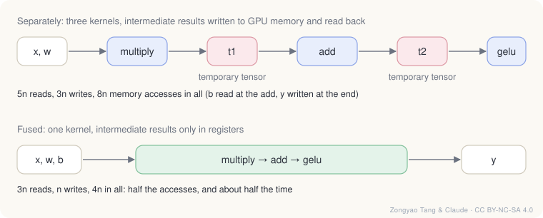

The thread: first see what fusion actually saves → which operators can be fused together and which cannot → training also has a backward pass, so what about intermediate results the backward pass needs once they are fused away → where the compiler cannot do it, someone has written fused kernels by hand, and you use them every day. 2.5 covered the compiler's flow; this unit covers the reasoning behind the most important thing it does.
Part 4 · Operators and kernels4.2 Operator fusion
Translated by AI (Anthropic's Claude) from the Chinese edition. The Chinese original is the reference.
This unit answersWhy does the same computation get faster when written together? What does the compiler do for you?
Follows the "three walls" of 3.1 and the operator analysis of 4.1: aimed squarely at the bandwidth-bound and overhead-bound part. 2.5 covered the compiler's flow; here we look at the most important thing it does.
- Operator fusion: intermediate results never touch memory
- What can be fused: a chain of element-wise operations, plus the reduction that follows them
- Fusion in training: what about fused-away intermediate results the backward pass needs
- Beyond the compiler: the hand-written fused kernels you use every day
Explanation
1Operator fusion: intermediate results never touch memory
Take y = gelu(x + b). Executed separately, the addition reads x and b and writes an intermediate result, then gelu reads the intermediate result and writes y; fused into one kernel, x and b are read once and y written once, and the intermediate result stays in registers throughout.
Count the reads and writes. Take
y = gelu(x * w + b), with tensors of n elements each.Executed separately (three kernels):
- Multiplication: read x and w, write a temporary t1. Read 2n, write n.
- Addition: read t1 and b, write t2. Read 2n, write n.
- gelu: read t2, write y. Read n, write n.
In all, read 5n and write 3n, 8n memory accesses; and two temporary tensors allocated.
Fused into one kernel: each thread reads
x[i],w[i]andb[i], computes everything in registers, and writesy[i]. Read 3n, write n, 4n in all; no temporary tensors.
Two ways of executing the same expression Why the speed-up is almost proportional. As 3.3 explained, element-wise operations have extremely low arithmetic intensity; their time is decided by "how many bytes were moved", and the arithmetic itself takes almost no time. Accesses drop from 8n to 4n, so the time roughly halves. The longer the chain, the more is saved: in a chain of k operators, all 2(k−1)n reads and writes of intermediate results disappear.
Two more things saved at the same time.
- The number of kernels drops from 3 to 1. Every kernel launch has a fixed cost (2.3), and for small tensors this matters even more than the reads and writes.
- The memory of the two temporary tensors, and the time to allocate them.
So fusion deals with two of the three walls of 3.1 at once: bandwidth and overhead. It does not change the compute wall; matrix multiplications do not get faster from it.
Registers are the key. Fusion works because the intermediate results stay at the place closest to the arithmetic units (the memory hierarchy of 3.3) and are thrown away after use. This is the cleanest example of "move data close and use it many times" from 0.1: data moves from memory into registers once and is used three times in a row there.
Who does the fusing. Three sources, covered in the next three cards: the compiler does it automatically (Inductor, 2.5); large operators written by hand in the framework; and you yourself, writing in Triton or CUDA.
An analogyLike an assembly line where parts are passed straight from one station to the next, instead of being sent back to the warehouse and fetched again after every step.
So after fusing k consecutive element-wise operators, memory reads and writes fall to about 1/k of what they were; for the bandwidth-bound part this is an almost proportional speed-up, and it saves k−1 kernel launches on the way.
Builds on Arithmetic intensity: how many operations per byte movedA program is slow for only three reasons: compute, bandwidth, overheadtorch.compile in two steps: capture the graph, then generate kernelsFive ideas come back in every layerUsed later in What can be fused: a chain of element-wise operations, plus the reduction that follows themSourcesLecture 18 code: fusing add + relu- Fusion saves the reads and writes of intermediate results. So which operators can be merged this way?
2What can be fused: a chain of element-wise operations, plus the reduction that follows them
The easiest to fuse are element-wise operations: each output element depends only on the elements at the same position in each input. A chain of such operations can be merged into one kernel in which each thread computes the whole chain for one position. A reduction right after them (a sum, a maximum) can be merged in too. Operations like matrix multiplication and sorting, where "each output depends on many inputs", are usually the boundary of fusion.
Classify operators by "which inputs an output depends on".
- *Element-wise*:
add,mul,exp,gelu, operations with a scalar, type conversion. Output element i looks only at input element i. Broadcasting counts too (one input's elements are reused). - *Reductions*:
sum,mean,max,norm. Many input elements combine into one output. - *Global dependence*: matrix multiplication, convolution, sorting, attention. Each output depends on a large patch of the input.
Element-wise chains.
y = gelu(x * w + b)is three element-wise steps. In the fused kernel each thread is responsible for one position: readx[i],w[i]andb[i], multiply, add and compute gelu in registers, writey[i]. The three steps need no cooperation between threads, so they can always be fused.Element-wise plus a reduction. Layer normalisation (LayerNorm) is the typical case: first the mean (a reduction), subtract it (element-wise), square and average to get the variance (element-wise plus a reduction), then divide, multiply by the scale and add the bias (element-wise). A well-designed kernel reads each row from memory only once: the threads read the row in, compute the mean and variance with the parallel reduction of 3.5, then each compute their results and write them back. Executed separately, the row is read and written five or six times.
Where the boundaries are.
- Matrix multiplication: it has dedicated, highly optimised implementations (4.5), and the compiler does not take it apart and mix it with other operations. So the typical graph is "matrix multiplication → a chain of fusible operations → matrix multiplication", with fusion happening between the two matrix multiplications.
- An intermediate result used in several places, one of them much later: it has to be written out and kept, and fusion breaks there (or it is recomputed).
- Operations whose shape changes, or which need all the results before they can continue (such as filtering by a mask, where the size of the output depends on the data).
Against the two kinds of operator in 4.1. 4.1 divided a Transformer's operators into compute-bound (matrix multiplications) and bandwidth-bound (the rest). What fusion deals with is exactly the second kind. So in large-model training, fusion improves the time "outside matrix multiplications"; the smaller the model and the larger that share, the more visible the effect of fusion.
Inductor works roughly like this too: decompose the graph's operators into basic operations, merge the element-wise operations and reductions that can be merged into the same loop as far as possible, and generate one Triton kernel.
An analogyLike a few steps on an assembly line: if each step handles only the one part in hand (tighten a screw, stick on a label, inspect), one worker can do them all in one go; if a step needs a whole batch of parts laid out together for comparison (pick the largest), a full batch has to be gathered first, and the steps before and after break there.
So how much a model gains from fusion depends on how many element-wise operations it has "in chains". Normalisation, activation functions, residual additions and position encodings all belong to this kind, and they are exactly the bandwidth-bound part.
Builds on Operator fusion: intermediate results never touch memoryAlmost all of a Transformer's arithmetic is in matrix multiplications, but not all of its timeA reduction is a knockout tournament: n numbers, a result in log n roundsUsed later in Fusion in training: what about fused-away intermediate results the backward pass needsSourcesPyTorch 2 paper, page 9, §4.4 scheduling: which operators are fused togetherMaking Deep Learning Go Brrrr (Horace He): fusion- *Element-wise*:
- In the forward pass, intermediate results never touching memory is a pure win. But training also has a backward pass.
3Fusion in training: what about fused-away intermediate results the backward pass needs
As 2.2 explained, the backward pass needs some of the forward pass's intermediate results. Yet fusion means exactly that these intermediate results never touch memory. There are two ways out: save the few the backward pass really needs and nothing else; or save none and recompute from the inputs in the backward pass. For element-wise operations recomputation is cheap, often faster than "write it back to memory, read it out again in the backward pass".
The problem. Again
y = gelu(x * w + b). Executed eagerly, autograd saved the tensors the backward pass needs in each of the three nodes, multiplication, addition and gelu (2.2). Fused into one kernel, the two intermediate resultsx * wandx * w + bexisted in registers only for an instant.Look at forward and backward together. As 2.5 explained, AOTAutograd first gets a joint graph containing forward and backward, then cuts it in two. Where it is cut decides "which quantities pass from the forward pass to the backward". For the example above, what the backward pass actually needs is:
xandw(for the gradient of the multiplication), and the value of gelu's derivative at each position.xandware inputs, in memory all along, with no extra saving needed.- gelu's derivative depends on
x * w + b. Two choices: write it back to memory in the forward pass for the backward; or compute it again fromx,wandbin the backward pass.
Why recomputing can be faster. In bandwidth-bound operations the time goes into reading and writing memory, and the computation itself costs almost nothing (the arithmetic intensity of 3.3).
- Save: the forward pass writes one more tensor, the backward pass reads one more tensor. Two memory accesses.
- Recompute: the backward pass does one more multiply-add. And
x,wandbhave to be read in the backward pass anyway (to compute gradients), so no memory accesses are added.
So recomputing loses nothing in time and saves memory. The PyTorch 2 paper notes that when cutting the joint graph, it tends to let the backward pass recompute cheap quantities.
This choice keeps coming back. The same problem at different scales:
- Inside one fused kernel: recompute a few element-wise steps.
- Flash Attention in 4.4: recompute a block of the attention matrix in the backward pass instead of saving the N×N result.
- Activation checkpointing in 2.2: recompute the forward pass of a whole stretch of network in the backward pass.
All three are "trading computation for memory" from 0.1. The test of whether it is worth it is the same too: is the part being recomputed bandwidth-bound (if so, almost free), and how much memory is saved.
An analogyLike doing a multi-step sum in your head: the intermediate results need not all be written on paper. If you later need the result of some step, working it out again is quicker than leafing through the scrap paper.
So fusion is not just about the forward pass. The compiler considers forward and backward together to decide which intermediate results are worth saving, which is part of the work of the AOTAutograd layer in 2.5.
Builds on What can be fused: a chain of element-wise operations, plus the reduction that follows themTo go backwards, the forward pass's intermediate results must be kept: the bulk of training memoryAOTAutograd: getting the backward graph in advance tooFive ideas come back in every layerUsed later in Beyond the compiler: the hand-written fused kernels you use every dayIn inference, what quantisation mainly saves is bandwidth, not computeSourcesPyTorch 2 paper, page 8, partitioning the joint graph: save or recompute- The compiler's fusion is general. For a few especially important patterns, there is a more direct way.
4Beyond the compiler: the hand-written fused kernels you use every day
Some fusion patterns are too important, or too special, to wait for the compiler; someone wrote each of them by hand as one kernel. Scaled dot-product attention (with Flash Attention behind it), fused optimizers, and the kernel that combines the last linear layer with the cross-entropy loss are examples. Call them, and you get the benefit of fusion even without torch.compile.
Scaled dot-product attention.
torch.nn.functional.scaled_dot_product_attention(q, k, v)does "matrix multiplication, scaling, masking, softmax, dropout, matrix multiplication again" in one function. On the GPU, an implementation of Flash Attention (4.4) can be behind it. Write it yourself in five or six lines, and executed eagerly each line is a separate kernel, with the N×N matrix in between going in and out of memory several times. This is the fusion with the largest payoff, because the intermediate result saved is quadratic in size. It also shows the compiler's limits: Flash Attention is not just squeezing several operators into one kernel; it changes the order of computation (tiling, online softmax), and rewrites of that kind are still designed by people.Fused optimizers. As 2.6 explained: Adam's dozen element-wise steps written into one kernel, each parameter read and written once.
Linear layer plus cross-entropy. The last step of a language model multiplies the hidden states by a very large matrix (vocabulary size × hidden dimension) to get each position's scores over the whole vocabulary, then computes cross-entropy. This score tensor is batch × sequence length × vocabulary size, often the largest intermediate result in the whole model, and it is useless once the loss is computed. Fusing the two steps, computing scores block by block, computing the loss and gradient at once, and never keeping the full score tensor saves a great deal of memory. The Liger Kernel introduced in lecture 28 of GPU MODE does this kind of thing, in Triton.
Normalisation layers.
F.layer_norm,F.group_normand the like are each a single operator, done in one go inside, not a combination of "mean, subtract, variance, divide" operators.Advice on writing code that follows.
- If a ready-made large operator exists, use it rather than assembling it again from small ones.
- If an operation you assembled yourself is on the hot path, first see whether torch.compile fuses it well (the logs of 2.5 show the generated kernels).
- Only if neither works and the profiler shows it really is a bottleneck, consider writing a fused kernel yourself. Triton, in the next unit, is the least effortful tool for this.
This is also the practical reason for learning kernels in parts 3 and 4: you will most likely never rewrite matrix multiplication, but you may well meet "a combination of operations that no library has and the compiler does not fuse well".
An analogyLike stock prepared in advance in a restaurant: the general method is to make it fresh for each dish, but the few most used stocks were made long ago, in big pots, by the best recipe, ready to ladle out.
So when writing a model, prefer the "large" operators the framework provides over assembling them yourself from small ones. They are often specifically fused; a version you assemble yourself relies on the compiler rediscovering the pattern, and may not end up as good.
Builds on Fusion in training: what about fused-away intermediate results the backward pass needsThe optimizer can be slow too: hundreds of small kernels lose to a few large onesAttention is a "soft" table lookupSourcesPyTorch docs: scaled_dot_product_attentionFlashAttention paper, page 2, figure 1: the fused attention kernelLiger Kernel (a collection of fused kernels written in Triton)
Putting it together
Fusion merges several operators into one kernel, keeping intermediate results in registers instead of writing them back to memory. Element-wise operations and the reductions after them can be fused; matrix multiplications are usually the boundary. Intermediate results the backward pass needs are either saved or recomputed. Patterns the compiler does not cover rely on hand-written fused kernels: scaled dot-product attention and fused optimizers are examples.
Test yourself
Without looking back at the explanation, say it in your own words.
- What does operator fusion save? Why is fusion an almost proportional speed-up for bandwidth-bound operators?
- Which kinds of operator fuse easily? Why is matrix multiplication usually the boundary of fusion?
- Fused intermediate results are no longer saved; what happens when the backward pass needs them? Why is recomputing sometimes faster than saving?
- Give some examples of hand-written fused kernels. Why prefer the "large" operators the framework provides?